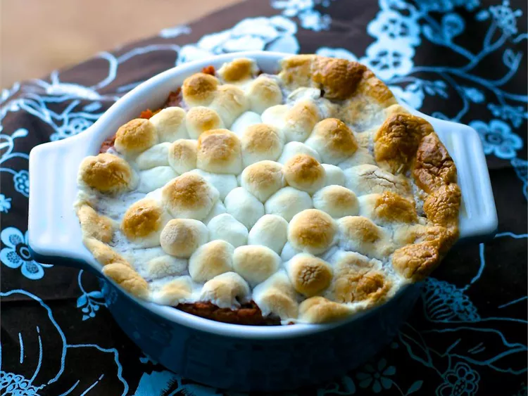

Description
This easy sweet potato casserole is simple and yummy. My husband begs me for this dish. I got the recipe from his mother.
Ingredients
- 6 large sweet potatoes, peeled and cut into chunks
- 1 cup white sugar/li>
- ½ cup brown sugar
- 2 tablespoons ground cinnamon
- 1 tablespoon butter, softened
- 1 cup miniature marshmallows, or as needed
Directions
- Place sweet potatoes in a large pot and cover with salted water; bring to a boil. Reduce heat to medium-low and simmer until tender, about 20 minutes; drain.
- Preheat the oven to 375 degrees F (190 degrees C). Grease a deep casserole dish.
- Mash potatoes with a potato masher in a bowl until no large lumps remain. Stir in both sugars, cinnamon, and butter until well combined, then transfer to the prepared casserole dish. Cover with a layer of miniature marshmallows.
- Bake in the preheated oven until marshmallows are browned, about 30 minutes.